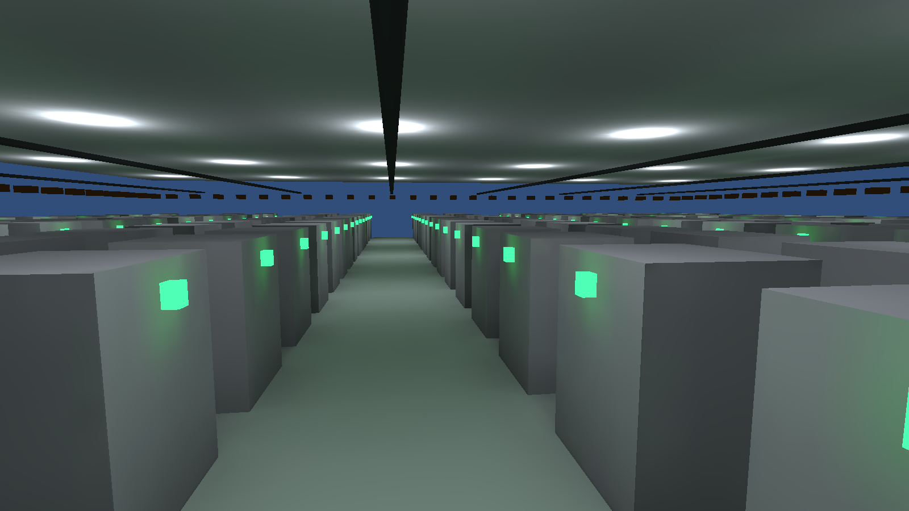

Phase 9 · Station 01
Jobs & Burst — 수천 대의 이동
Phase 4의 매니저 통합은 호출을 96번에서 1번으로 줄였지만, 그 1번은 여전히 메인 스레드 한 개가 전부 처리한다. 비히클이 수천 대가 되면 그 한 스레드가 프레임 예산을 넘긴다. 처방은 둘 — 일을 여러 코어에 나누고(Jobs), 그 코드를 기계어까지 끌어내린다(Burst).
왜 매니저 통합 다음이 Jobs인가
Phase 4 교재 끝의 티저 — "매니저 통합 다음 단계가 있다" — 가 바로 이것이다. 매니저 루프는 호출 오버헤드를 없앴지만 계산은 코어 1개가 다 한다. 요즘 CPU는 코어가 8개, 16개다. 노는 코어에 일을 나눠 주는 것이 C# Job System이다.
IJobParallelForTransform + TransformAccessArray의 실제 사용을 보여 준다.
우리 JobifiedVehicleFleet가 정확히 이 패턴이다.
YouTube에서 보기
NativeArray와 Allocator — GC 밖의 메모리
관리 힙(GC)의 배열(float[])은 잡에 넘길 수 없다 — GC가 언제든 옮길 수 있기
때문이다. 그래서 NativeArray가 필요하다: GC 밖 네이티브 메모리에 값 타입을
연속 배치한다. 얼마나 오래 살지는 Allocator가 정하고, 할당한 쪽이
Dispose 책임을 진다.
| Allocator | 수명 | 해제 | 쓰는 곳 |
|---|---|---|---|
Temp | 한 함수/한 프레임 | 자동 | 잡 밖의 짧은 임시 버퍼 |
TempJob | 잡 하나(≤4프레임) | 잡 후 Dispose | 매 프레임 Schedule/Complete하는 입력 |
Persistent | 명시적 해제까지 | OnDestroy에서 Dispose | 컴포넌트 내내 유지(offsets 등) |
안전성 시스템 — 레이스를 컴파일이 잡는다
멀티스레딩의 악몽은 데이터 레이스다. Job System은 [ReadOnly]/[WriteOnly]
표시와 의존 추적으로, 같은 데이터를 두 잡이 동시에 쓰면 스케줄 시점에 예외를
던진다. "안전한 멀티스레딩"이 가능한 이유다 — 사람이 락을 걸지 않아도 엔진이 충돌을 막는다.
IJobParallelForTransform + TransformAccessArray
순수 데이터 병렬은 IJobParallelFor지만, GameObject의 Transform을 유지한 채
대량 이동하려면 IJobParallelForTransform + TransformAccessArray다.
이 프로젝트는 후자가 정답 — 오브젝트 선택·물리·기존 씬을 버리지 않기 때문이다.
Time.time은 잡 안에서 못 읽으니 메인 스레드에서 계산해 잡 필드로 전달하고,
Vector3/Mathf 대신 float3/math를 써야 Burst가
SIMD로 벡터화한다.
[BurstCompile]
private struct MoveJob : IJobParallelForTransform
{
[ReadOnly] public NativeArray<float> Offsets;
public float Travel; // 메인 스레드에서 Time.time * speed로 채워 전달
public float Perimeter;
public float HalfWidth;
public float HalfLength;
public void Execute(int index, TransformAccess transform)
{
float distance = Repeat(Travel + Offsets[index], Perimeter);
transform.localPosition = EvaluateTrack(distance, transform.localPosition.y);
}
// Repeat: math.floor 기반, EvaluateTrack: 4구간 순환 트랙을 float3로 이식
}측정 — Profiler Timeline에서 워커 분산 읽기
ProfilerMarker로 구간을 이름표 찍어 재고, Profiler 타임라인에서 메인 스레드
한 줄에 몰려 있던 이동이 워커 스레드 여러 줄로 퍼지는 것을 확인한다. 화면 FPS는 참고용 —
신뢰 측정은 마커의 ms다(실습 스테이션에서 상술).
| 방식 | 스레드 | 대량에서의 한계 |
|---|---|---|
| 오브젝트별 Update | 메인 1 | 호출 오버헤드 N배(P4에서 기각) |
| 매니저 통합 루프 | 메인 1 | 코어 1개가 전부 — 수천 대에서 예산 초과 |
| Jobs | 워커 N | 스케줄 오버헤드, 작은 N에선 손해 |
| Jobs + Burst | 워커 N + SIMD | 현재 최적. 다음은 GPU-driven |

FabSim-P9-Complete의 스트레스 씬 — 이 수많은 비히클(천장 레일)과 장비(발광
상태등)를 JobifiedVehicleFleet가 워커 스레드로 움직인다. 잡 경로(useJobs)와 매니저
루프가 정확히 같은 궤도를 내는지는 순수 TrackMath의 좌표 계산을
헤드리스 테스트로 검증했다(모서리·연속성). Burst 잡·NativeArray·TransformAccessArray가 컴파일
경고 0으로 돈다. 잡화 전/후 Profiler 워커 분산은 실습(Station 04)에서 직접 측정한다.
지도만 — ECS/DOTS
한 걸음 더 가면 DOTS(ECS)가 있다 — 데이터를 캐시 친화적으로 재배치하고 GameObject를 아예 제거해 더 큰 규모를 소화한다. 하지만 기존 씬·컴포넌트·에디터 워크플로를 유지하며 최대 이득을 얻는 지금의 최적 투자는 Jobs+Burst까지다. 수만 대 + 구조 데이터 전환 여력이 될 때 넘어간다.
핵심 확인 질문
왜 관리 힙 배열(float[])은 잡에 넘길 수 없고 NativeArray가 필요한가?
GC가 관리 힙의 객체를 언제든 이동·회수할 수 있어, 워커 스레드가 그 메모리를 안전하게 참조할 수 없다. NativeArray는 GC 밖 네이티브 메모리에 고정 배치돼, 잡이 여러 스레드에서 안전하게 읽고 쓸 수 있다.
offsets는 왜 Persistent인가?
offsets는 컴포넌트가 사는 내내 매 프레임 잡 입력으로 쓰인다. Temp·
TempJob은 수명이 짧아(한 프레임/잡 하나) 매번 재할당해야 한다. 컴포넌트
수명 내내 유지되는 데이터는 Persistent로 한 번 할당하고 OnDestroy에서
Dispose한다.
Time.time을 잡 Execute 안에서 직접 읽으면 안 되는 이유와 대안은?
Time.time은 메인 스레드 전용 엔진 API라 워커 스레드에서 접근 불가다. 메인
스레드에서 Travel = Time.time * speed를 계산해 잡의 필드로 넘긴 뒤, 잡은 그
값을 읽어 쓴다.
순수 데이터 병렬이 아니라 IJobParallelForTransform을 쓰는 이유는?
GameObject의 Transform을 유지하려고다. 오브젝트 선택·물리·기존 씬 워크플로를
버리지 않으면서 대량 Transform을 워커 스레드로 옮기려면 TransformAccessArray와
짝을 이루는 이 잡 타입이 필요하다.
Burst가 살려면 무엇을 써야 하며, 확인은 어떤 도구로 하는가?
Vector3/Mathf 대신 float3/math.*
(Unity.Mathematics)를 써야 Burst가 SIMD로 벡터화한다. 실제 생성된 SIMD 명령은
Burst Inspector에서 어셈블리로 확인한다.